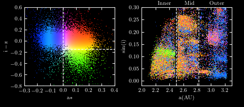

SDSS Stripe 82 Moving Object Catalog¶
Figure 1.12.
A multicolor scatter plot of the properties of asteroids from the SDSS Moving Object Catalog (cf. figure 1.8). The left panel shows observational markers of the chemical properties of the asteroids: two colors a* and i-z. The right panel shows the orbital parameters: semimajor axis a vs. the sine of the inclination. The color of points in the right panel reflects their position in the left panel. This plot is similar to that used in figures 3-4 of Parker et al 2008.
{kind=link}
# Author: Jake VanderPlas
# License: BSD
# The figure produced by this code is published in the textbook
# "Statistics, Data Mining, and Machine Learning in Astronomy" (2013)
# For more information, see http://astroML.github.com
# To report a bug or issue, use the following forum:
# https://groups.google.com/forum/#!forum/astroml-general
import numpy as np
import matplotlib
from matplotlib import pyplot as plt
from astroML.datasets import fetch_moving_objects
from astroML.plotting.tools import devectorize_axes
#----------------------------------------------------------------------
# This function adjusts matplotlib settings for a uniform feel in the textbook.
# Note that with usetex=True, fonts are rendered with LaTeX. This may
# result in an error if LaTeX is not installed on your system. In that case,
# you can set usetex to False.
if "setup_text_plots" not in globals():
from astroML.plotting import setup_text_plots
setup_text_plots(fontsize=8, usetex=True)
def black_bg_subplot(*args, **kwargs):
"""Create a subplot with black background"""
if int(matplotlib.__version__[0]) >= 2:
kwargs['facecolor'] = 'k'
else:
kwargs['axisbg'] = 'k'
ax = plt.subplot(*args, **kwargs)
# set ticks and labels to white
for spine in ax.spines.values():
spine.set_color('w')
for tick in ax.xaxis.get_major_ticks() + ax.yaxis.get_major_ticks():
for child in tick.get_children():
child.set_color('w')
return ax
def compute_color(mag_a, mag_i, mag_z, a_crit=-0.1):
"""
Compute the scatter-plot color using code adapted from
TCL source used in Parker 2008.
"""
# define the base color scalings
R = np.ones_like(mag_i)
G = 0.5 * 10 ** (-2 * (mag_i - mag_z - 0.01))
B = 1.5 * 10 ** (-8 * (mag_a + 0.0))
# enhance green beyond the a_crit cutoff
G += 10. / (1 + np.exp((mag_a - a_crit) / 0.02))
# normalize color of each point to its maximum component
RGB = np.vstack([R, G, B])
RGB /= RGB.max(0)
# return an array of RGB colors, which is shape (n_points, 3)
return RGB.T
#------------------------------------------------------------
# Fetch data and extract the desired quantities
data = fetch_moving_objects(Parker2008_cuts=True)
mag_a = data['mag_a']
mag_i = data['mag_i']
mag_z = data['mag_z']
a = data['aprime']
sini = data['sin_iprime']
# dither: magnitudes are recorded only to +/- 0.01
np.random.seed(0)
mag_a += -0.005 + 0.01 * np.random.random(size=mag_a.shape)
mag_i += -0.005 + 0.01 * np.random.random(size=mag_i.shape)
mag_z += -0.005 + 0.01 * np.random.random(size=mag_z.shape)
# compute RGB color based on magnitudes
color = compute_color(mag_a, mag_i, mag_z)
#------------------------------------------------------------
# set up the plot
fig = plt.figure(figsize=(5, 2.2), facecolor='k')
fig.subplots_adjust(left=0.1, right=0.95, wspace=0.3,
bottom=0.2, top=0.93)
# plot the color-magnitude plot
ax = black_bg_subplot(121)
ax.scatter(mag_a, mag_i - mag_z,
c=color, s=0.5, lw=0)
devectorize_axes(ax, dpi=400)
ax.plot([0, 0], [-0.8, 0.6], '--w', lw=1)
ax.plot([0, 0.4], [-0.15, -0.15], '--w', lw=1)
ax.set_xlim(-0.3, 0.4)
ax.set_ylim(-0.8, 0.6)
ax.set_xlabel(r'${\rm a*}$', color='w')
ax.set_ylabel(r'${\rm i-z}$', color='w')
# plot the orbital parameters plot
ax = black_bg_subplot(122)
ax.scatter(a, sini,
c=color, s=0.5, lw=0, edgecolor='none')
devectorize_axes(ax, dpi=400)
ax.plot([2.5, 2.5], [-0.02, 0.3], '--w', lw=1)
ax.plot([2.82, 2.82], [-0.02, 0.3], '--w', lw=1)
ax.set_xlim(2.0, 3.3)
ax.set_ylim(-0.02, 0.3)
ax.set_xlabel(r'${\rm a (AU)}$', color='w')
ax.set_ylabel(r'${\rm sin(i)}$', color='w')
# label the plot
text_kwargs = dict(color='w', transform=plt.gca().transAxes,
ha='center', va='bottom')
ax.text(0.25, 1.02, 'Inner', **text_kwargs)
ax.text(0.53, 1.02, 'Mid', **text_kwargs)
ax.text(0.83, 1.02, 'Outer', **text_kwargs)
# Saving the black-background figure requires some extra arguments:
#fig.savefig('moving_objects.png',
# facecolor='black',
# edgecolor='none')
plt.show()